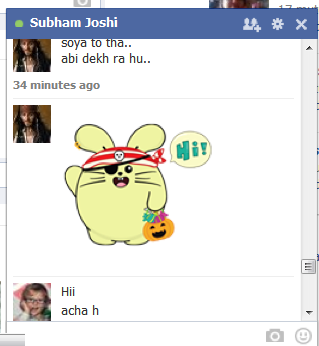
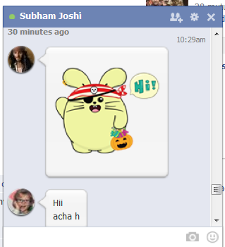

Click here to get AVX-facebook-chat messenger
How to Use??
This page contains examples of working of AVX-facebook-chat messenger. Use this page for reference, whilst you appling on your browser.
Browser
For different browser:
Google Chrome or Chromium
Google Chrome provides a user stylesheet that you can modify in the configuration folder or the user profile folder. In Chromium/Linux, it is located at ~/.config/chromium/Default/User StyleSheets/Custom.css. For Google Chrome it is at ~/.config/google-chrome/Default/User StyleSheets/. In MS Windows, the location is %AppData%\Local\Google\Chrome\User Data\Default\User StyleSheets\.
Depending on the browser version and OS this could vary but check the configuration folder on your system under the folder
Mozilla Firefox
As with Google Chrome, there is a user specific style sheet file in Firefox. This file named userContent.css should be located under the configuration/user profile folder, inside a folder named chrome. In Linux, it is usually located at ~/.mozilla/firefox/
Sometimes, you might find another file named userChrome.css. Do not confuse this with the userContent.css and if you do not find a file by that name, you can create one.
Opera
Opera provides a nice configuration GUI for you to specify the custom css file. Open the Menu -> Settings -> Preferences. In the Preferences dialog, choose the Advanced tab. Select the Content menu item in the left hand side menu bar. On the right side, you will see a Style Options button which will open another dialog where you should be able to configure quite a bit of the stylesheet options including the selection of the user specific style sheet. To add specific styles, you can open and edit this user specific stylesheet in a text editor. In addition to these configuration based options, you can also use extensions or addons based options.
Safari
From the Edit menu, select Preferences Click on the Advanced tab From the Style Sheet dropdown, select Other..., where you can browse to AVX-facebook-chat messenger.css file.
Internet Explorer
Go to Explorer and select Preferences. From the General section, select Accessibility, which should be located in the bottom right of the window. Select the checkbox that reads Format documents using my style sheet, then browse to your style sheet and click OK, and OK again to exit the tools menu. Once you restart your browser, your style sheet will be picked up by Internet Explorer.
Demo

Before deploying AVX-facebook-chat messenger, facebook chat box will look like simple and boring.

After apply AVX-facebook-chat messenger as the preference stylesheet, facebook chat box will look like as android chat box.